## synchronization | **abstractions** ## **operating systems** ### csci 3411 ### Prof. **Sibin Mohan** <br> _<font size="5"> acknowledgments: some content modified from Silberschatz et al. and West</font>_ --- previously, in operating systems... --- ### previously | **recap** ||| | --- | --- | | **critical sections** | protect **shared** data structures | --- ### previously | **recap** ||| | --- | --- | | **critical sections** | protect **shared** data structures | | **atomic instructions** | <scb>lock xaddl</scb>, <scb>xchg</scb>, <scb>lock cmpxchg</scb> | --- ### previously | **recap** ||| | --- | --- | | **critical sections** | protect **shared** data structures | | **atomic instructions** | <scb>lock xaddl</scb>, <scb>xchg</scb>, <scb>lock cmpxchg</scb> | | **lock-free** code | possible... but **hard** and **limited** | || --- today → build **easier** abstractions on top of atomics --- ## locks/mutexes --- many **names**... same idea --- ### locks/mutexes | **names** | start of critical section | end of critical section | |---|---| | <scb>lock()</scb> | <scb>unlock()</scb> | --- ### locks/mutexes | **names** | start of critical section | end of critical section | |---|---| | <scb>lock()</scb> | <scb>unlock()</scb> | | <scb>acquire()</scb> | <scb>release()</scb> | --- ### locks/mutexes | **names** | start of critical section | end of critical section | |---|---| | <scb>lock()</scb> | <scb>unlock()</scb> | | <scb>acquire()</scb> | <scb>release()</scb> | | <scb>wait()</scb> | <scb>signal()</scb> | || --- ### locks/mutexes | **spin** or **block**? - whole lot **easier** than raw atomic instructions! --- ### locks/mutexes | **spin** or **block**? - whole lot **easier** than raw atomic instructions! - **spinlock** → busy-waits (<scb>while (x) ;</scb>) --- ### locks/mutexes | **spin** or **block**? - whole lot **easier** than raw atomic instructions! - **spinlock** → busy-waits (<scb>while (x) ;</scb>) - **mutex** → usually **blocks** instead of spinning --- ## building **mutual exclusion** --- ### building mutual exclusion ||| | --- | --- | | disable interrupts | mutual exclusion on **this** core | --- ### building mutual exclusion ||| | --- | --- | | disable interrupts | mutual exclusion on **this** core | | atomic instructions | synchronization **between** cores | --- ### building mutual exclusion ||| | --- | --- | | disable interrupts | mutual exclusion on **this** core | | atomic instructions | synchronization **between** cores | | combine both | a **spinlock** → then a **blocking** mutex on top | || --- operating systems → build **higher-level** abstractions... --- operating systems → build **higher-level** abstractions... ...on top of raw hardware --- ### <scb>xv6</scb> | **synchronization layers** **atomic instructions** → inter-core sync, one instruction <p>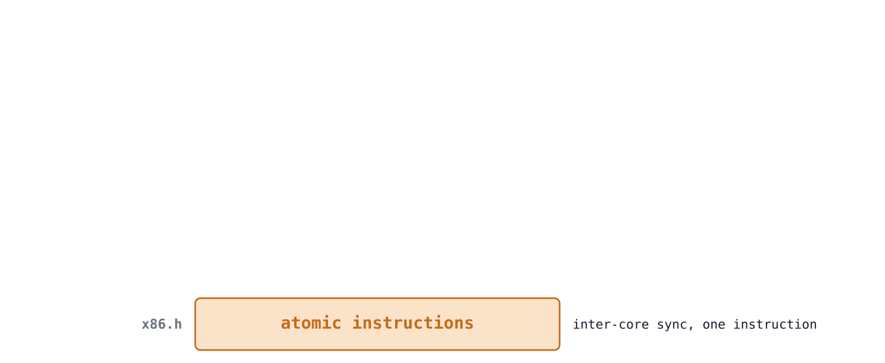</p> --- ### <scb>xv6</scb> | **synchronization layers** **spinlocks** → mutual exclusion, **spin** while waiting <p>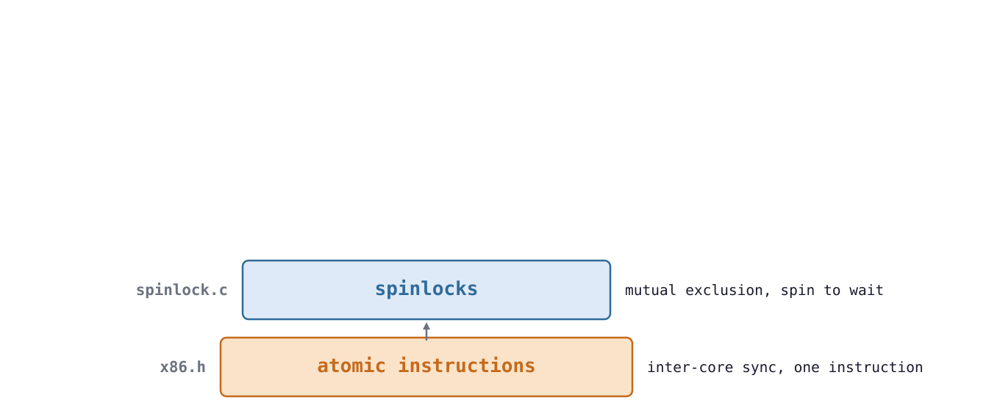</p> --- ### <scb>xv6</scb> | **synchronization layers** **sleeplocks** → mutual exclusion, **block** while waiting <p>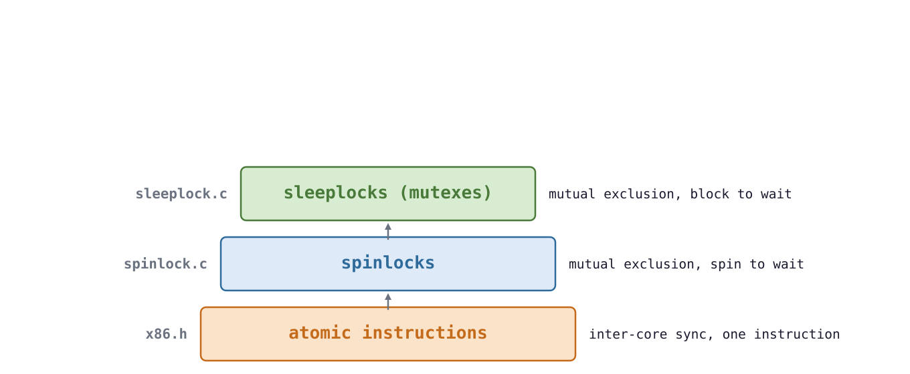</p> --- ### <scb>xv6</scb> | **synchronization layers** **condition variables** → block until a **condition** holds <p>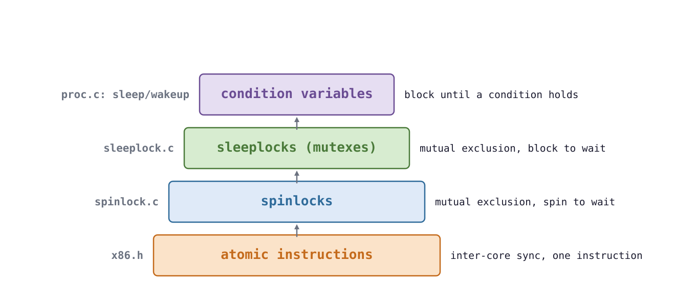</p> --- ### <scb>xv6</scb> | **synchronization layers** ||| | --- | --- | | spinlocks | **disable interrupts** for holder <br> → finish fast, others spin | --- ### <scb>xv6</scb> | **synchronization layers** ||| | --- | --- | | spinlocks | **disable interrupts** for holder <br> → finish fast, others spin | | where? | mostly in **kernel**, rarely in user code | --- ### <scb>xv6</scb> | **synchronization layers** ||| | --- | --- | | spinlocks | **disable interrupts** for holder <br> → finish fast, others spin | | where? | mostly in **kernel**, rarely in user code | | virtual machines | guest kernel **can't** really stop preemption <br> → spinlocks get tricky | || --- let's look at a `code` example... <scb>xv6</scb> sleeplocks --- ### <scb>xv6</scb> | <scb>sleeplock.h</scb> ```C // Long-term locks for processes struct sleeplock { uint locked; // Is the lock held? struct spinlock lk; // spinlock protecting this sleep lock // For debugging: char *name; // Name of lock. int pid; // Process holding lock }; ``` --- ### <scb>xv6</scb> | <scb>sleeplock.h</scb> ```C [3|4|8] // Long-term locks for processes struct sleeplock { uint locked; // Is the lock held? struct spinlock lk; // spinlock protecting this sleep lock // For debugging: char *name; // Name of lock. int pid; // Process holding lock }; ``` --- ### <scb>xv6</scb> | <scb>sleeplock.c</scb> ```C void acquiresleep(struct sleeplock *lk) { acquire(&lk->lk); while (lk->locked) { sleep(lk, &lk->lk); } lk->locked = 1; lk->pid = myproc()->pid; release(&lk->lk); } void releasesleep(struct sleeplock *lk) { acquire(&lk->lk); lk->locked = 0; lk->pid = 0; wakeup(lk); release(&lk->lk); } ``` --- ### <scb>xv6</scb> | <scb>sleeplock.c</scb> ```C [4|5|6|8|10|17|19|20] void acquiresleep(struct sleeplock *lk) { acquire(&lk->lk); while (lk->locked) { sleep(lk, &lk->lk); } lk->locked = 1; lk->pid = myproc()->pid; release(&lk->lk); } void releasesleep(struct sleeplock *lk) { acquire(&lk->lk); lk->locked = 0; lk->pid = 0; wakeup(lk); release(&lk->lk); } ``` --- ### <scb>xv6</scb> | <scb>sleeplock.c</scb> ```C void acquiresleep(struct sleeplock *lk) { acquire(&lk->lk); while (lk->locked) { sleep(lk, &lk->lk); } lk->locked = 1; lk->pid = myproc()->pid; release(&lk->lk); } void releasesleep(struct sleeplock *lk) { acquire(&lk->lk); lk->locked = 0; lk->pid = 0; wakeup(lk); release(&lk->lk); } ``` --- ### <scb>xv6</scb> | <scb>sleeplock.c</scb> ||| | --- | --- | | <scb>lk->lk</scb> | **spinlock** protecting sleeplock's own state | --- ### <scb>xv6</scb> | <scb>sleeplock.c</scb> ||| | --- | --- | | <scb>lk->lk</scb> | **spinlock** protecting sleeplock's own state | | <scb>sleep()</scb> | **block** while someone else holds it | --- ### <scb>xv6</scb> | <scb>sleeplock.c</scb> ||| | --- | --- | | <scb>lk->lk</scb> | **spinlock** protecting sleeplock's own state | | <scb>sleep()</scb> | **block** while someone else holds it | | <scb>wakeup()</scb> | wake sleepers on release | || --- ### <scb>xv6</scb> | <scb>sleeplock.c</scb> mutex built from **spinlock** + **sleep/wakeup** --- ### <scb>xv6</scb> | <scb>sleeplock.c</scb> mutex built from **spinlock** + **sleep/wakeup** [bounded waiting? **no** → xv6 keeps it simple] --- ## **blocking** mutexes --- ### blocking mutexes **wait queue** associated with each mutex --- ### blocking mutexes **wait queue** associated with each mutex | operation | description | where | |---|---|----| | **block** | place thread calling <scb>wait()</scb> | mutex's **wait queue** | --- ### blocking mutexes **wait queue** associated with each mutex | operation | description | where | |---|---|----| | **block** | place thread calling <scb>wait()</scb> | mutex's **wait queue** | | **wakeup** | remove **one** thread from wait queue | place in **runqueue** | || --- ### blocking mutexes ```C // n = 1: # of threads that can enter the CS wait() { n--; if (n < 0) { waitq_enqueue(curr_thd); block&schedule(); } } signal() { n++; if (n <= 0) { t = waitq_dequeue(); wakeup&schedule(t); } } ``` --- ### blocking mutexes ```C [3|5|6|11|13|14] // n = 1: # of threads that can enter the CS wait() { n--; if (n < 0) { waitq_enqueue(curr_thd); block&schedule(); } } signal() { n++; if (n <= 0) { t = waitq_dequeue(); wakeup&schedule(t); } } ``` --- ### blocking mutexes ```C // n = 1: # of threads that can enter the CS wait() { n--; if (n < 0) { waitq_enqueue(curr_thd); block&schedule(); } } signal() { n++; if (n <= 0) { t = waitq_dequeue(); wakeup&schedule(t); } } ``` --- ### blocking mutexes 1. <scb>T1</scb> holds mutex (<scb>n = 0</scb>) <p>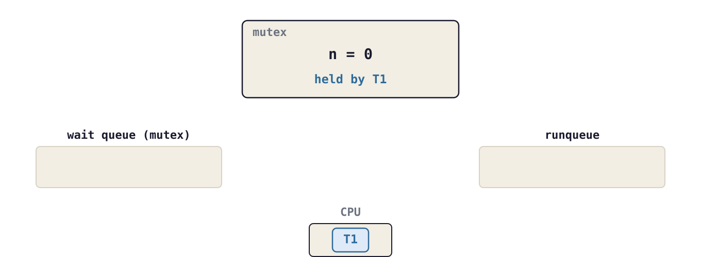</p> --- ### blocking mutexes 2. <scb>T2</scb> calls <scb>wait()</scb> → <scb>n = -1</scb> → **blocks** on wait queue <p>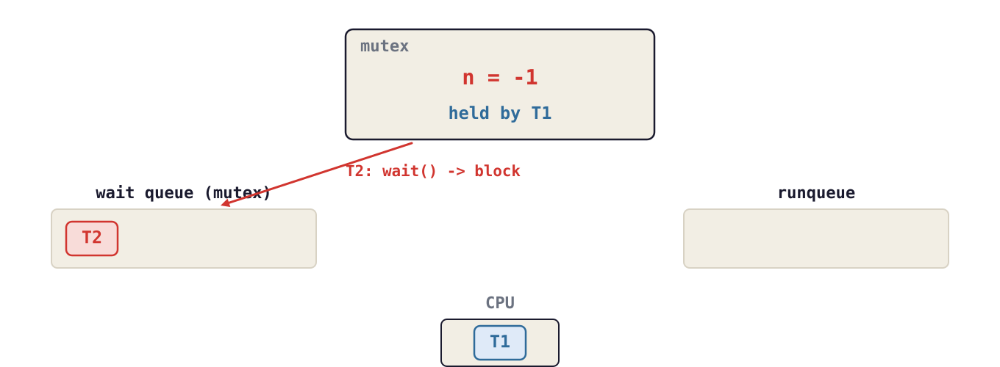</p> --- ### blocking mutexes 3. <scb>T1</scb> calls <scb>signal()</scb> → <scb>T2</scb> moved to **runqueue** (<scb>ready</scb>) <p>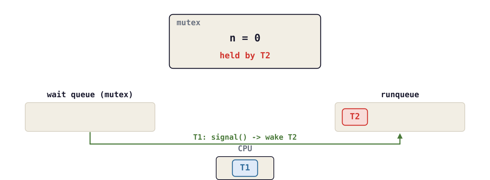</p> --- ### blocking mutexes 4. <scb>T2</scb> scheduled → runs in critical section <p>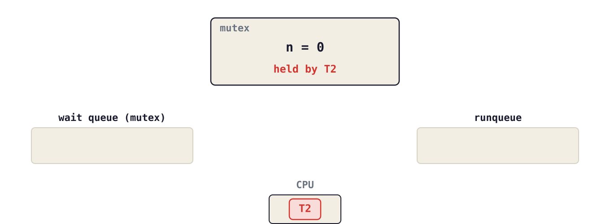</p> --- ### blocking mutexes <scb>running</scb> → <scb>blocked</scb> → <scb>ready</scb> → <scb>running</scb> --- which thread should <scb>signal()</scb> wake up? --- ### blocking mutexes | **which thread?** | wait queue order | bounded waiting? | details | |---|---|---| | **fifo** | **yes** | never wait behind someone who **came later** | --- ### blocking mutexes | **which thread?** | wait queue order | bounded waiting? | details | |---|---|---| | **fifo** | **yes** | never wait behind someone who **came later** | | **lifo** | **no** | early arrivals can **starve** | --- ### blocking mutexes | **which thread?** | wait queue order | bounded waiting? | details | |---|---|---| | **fifo** | **yes** | never wait behind someone who **came later** | | **lifo** | **no** | early arrivals can **starve** | | **priority** | **no** (in general) | but maybe you **want** priorities | || --- ### blocking mutexes | **which thread?** | wait queue order | bounded waiting? | details | |---|---|---| | **fifo** | **yes** | never wait behind someone who **came later** | | **lifo** | **no** | early arrivals can **starve** | | **priority** | **no** (in general) | but maybe you **want** priorities | || [more on this → **scheduling**] --- ## **using** locks --- which data structure should a lock **protect**? --- ### using locks - locks have **affinity** to data structures --- ### using locks - locks have **affinity** to data structures - two different locks → two threads inside **at once** --- ### using locks - locks have **affinity** to data structures - two different locks → two threads inside **at once** - same lock → threads **line up** --- what is the **_granularity_** of using locks? --- ### using locks | **granularity** |granularity | how many? | description | |---|---|---| | **coarse-grained** | **one** | **take before** accessing DS, **release after** | --- ### using locks | **granularity** |granularity | how many? | description | |---|---|---| | **coarse-grained** | **one** | **take before** accessing DS, **release after** | | **fine-grained** | **multiple** | each protecting **part** of DS | || --- ## coarse-grained locking --- ### coarse-grained locking 1. <scb>T1</scb> takes **single** lock, then does <scb>rm(A)</scb> <p>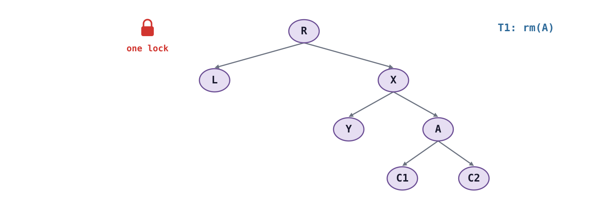</p> --- ### coarse-grained locking 2. walk tree to find <scb>A</scb> <p>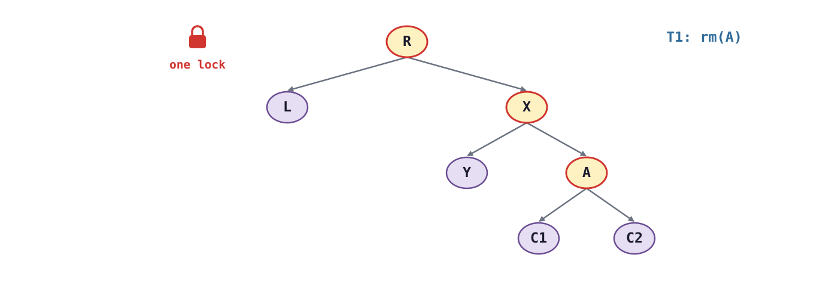</p> --- ### coarse-grained locking 3. replace <scb>A</scb> with child <p>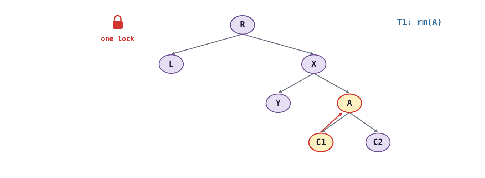</p> --- ### coarse-grained locking 4. done → release lock <p>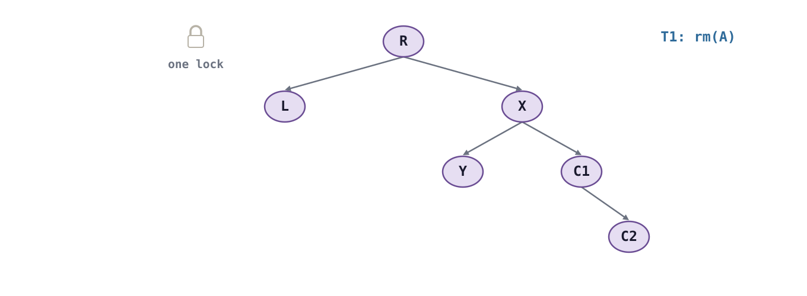</p> --- ### coarse-grained locking | good | bad | |---|---| | **simple** → just "wrap" DS | big DS → lots of **serialization** | --- ### coarse-grained locking | good | bad | |---|---| | **simple** → just "wrap" DS | big DS → lots of **serialization** | | | **limits** parallelism | || --- ### coarse-grained locking more cores → faster? --- ## **no!** maybe even **slower** → locks aren't free --- ## fine-grained locking --- ### fine-grained locking 1. lock root <scb>R</scb> <p>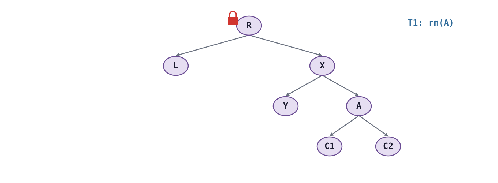</p> --- ### fine-grained locking 2. lock child <scb>X</scb>... <p>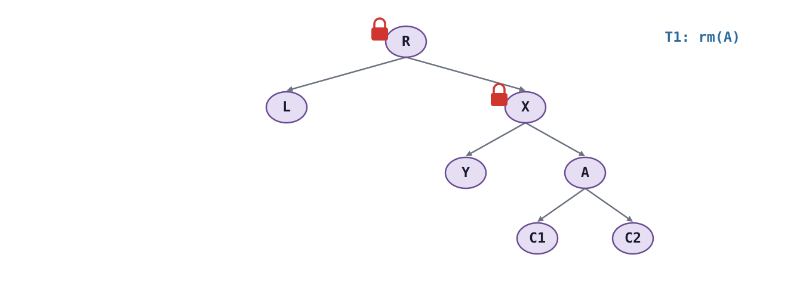</p> --- ### fine-grained locking 3. ...then **release** <scb>R</scb> → <scb>T2</scb> can enter left side! <p>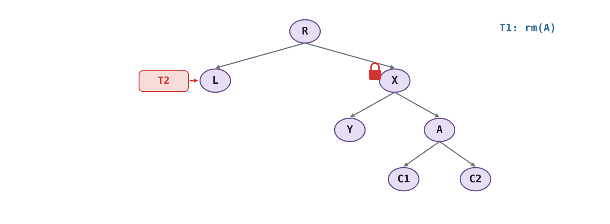</p> --- ### fine-grained locking 4. lock <scb>A</scb> <br> <p>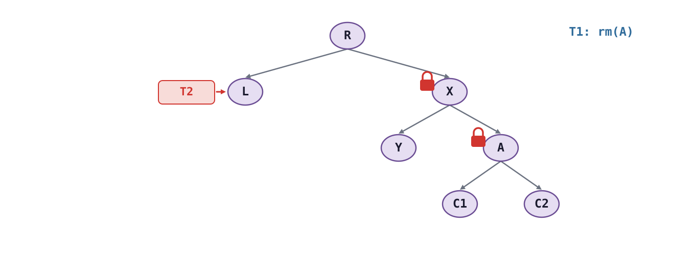</p> --- ### fine-grained locking 5. lock <scb>A</scb>'s child too → holding <scb>X</scb>, <scb>A</scb>, <scb>C1</scb> <p>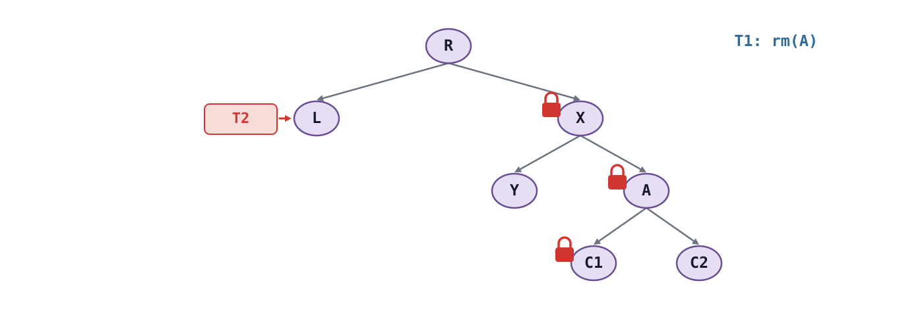</p> --- ### fine-grained locking 6. replace <scb>A</scb> with <scb>C1</scb> <p>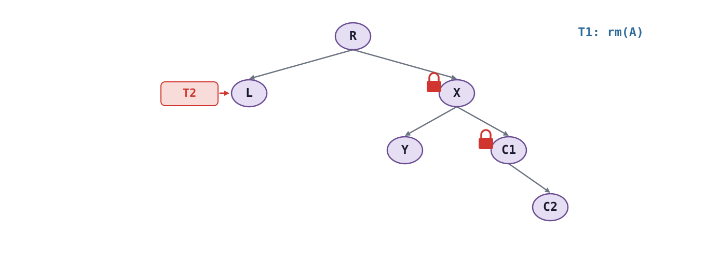</p> --- ### fine-grained locking 7. release all locks <p>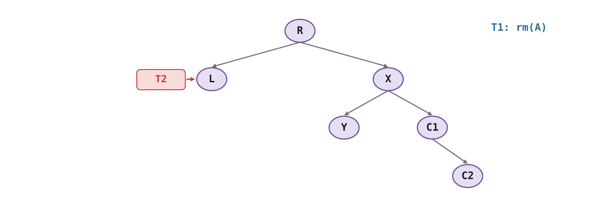</p> --- ### fine-grained locking **hand-over-hand** locking <div class="multicolumn" style="display: grid; grid-template-columns: 40% 60%; gap: 20px; align-items: center;"> <div> </div> <div> - take **next** lock... - ...**then** release previous - like climbing a cliff! </div> </div> --- ### fine-grained locking | good | | |---|---| | **multiple** threads access → **at same time** <br> (different parts) | | --- ### fine-grained locking | good | bad | |---|---| | **multiple** threads access → **at same time** <br> (different parts) | **hard** to reason about | --- ### fine-grained locking | good | bad | |---|---| | **multiple** threads access → **at same time** <br> (different parts) | **hard** to reason about | | | **hard** to get right | --- ### fine-grained locking | good | bad | |---|---| | **multiple** threads access → **at same time** <br> (different parts) | **hard** to reason about | | | **hard** to get right | | | more take/release → <br> more **overhead** | || --- ### lock granularity somewhere **between** coarse-grained locks and lock-free code --- what are your **goals**? parallelism or simplicity? --- ## Amdahl's law --- - parallelism → speeds up multi-threaded computation --- - parallelism → speeds up multi-threaded computation - critical sections force **mutual exclusion** - **sequential** execution --- ### Amdahl's law --- ### Amdahl's law speedup → **limited** by **sequential** part of code --- ### Amdahl's law | **example** - <scb>5%</scb> of execution in a critical section --- ### Amdahl's law | **example** - <scb>5%</scb> of execution in a critical section - as number of processors/cores → <scb>N = ∞</scb> --- ### Amdahl's law - <scb>s</scb> → percentage of **serial** part - <scb>N</scb> → number of **parallel** processors/cores --- ### Amdahl's law - <scb>s</scb> → percentage of **serial** part - <scb>N</scb> → number of **parallel** processors/cores <br> <br> ||| | --- | --- | | speedup | $\frac{1}{s + \frac{1 - s}{N}}$ | --- ### Amdahl's law - <scb>s</scb> → percentage of **serial** part - <scb>N</scb> → number of **parallel** processors/cores <br> <br> ||| | --- | --- | | speedup | $\frac{1}{s + \frac{1 - s}{N}}$ | | <scb>s = 0.05</scb> <br> <scb>N = ∞</scb> | <scb>1/0.05 = 20x</scb> speedup <br> **at most**! | || --- ### Amdahl's law <p>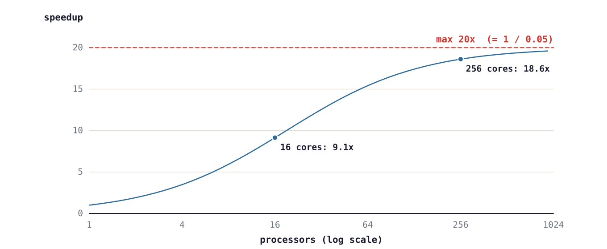</p> [see [Amdahl's law (wikipedia)](https://en.wikipedia.org/wiki/Amdahl%27s_law)] --- want parallel speedup? --- want parallel speedup? **minimize** sequential code [**critical sections**]! --- ## monitors --- ### monitors | **definition** **higher-level** abstraction → eases programming burden --- ### monitors | set of, --- ### monitors | set of, - **data structures** and --- ### monitors | set of, - **data structures** and - **procedures** (functions) that modify them --- ### monitors | set of, - **data structures** and - **procedures** (functions) that modify them functions → **only** access data structures + arguments --- ### monitors | **mutual exclusion** - **all** functions of monitor → mutually exclusive --- ### monitors | **mutual exclusion** - **all** functions of monitor → mutually exclusive 1. take lock on entry 2. release on exit --- ### monitors | **mutual exclusion** - **all** functions of monitor → mutually exclusive 1. take lock on entry 2. release on exit - data structures **protected** --- ### monitors <p>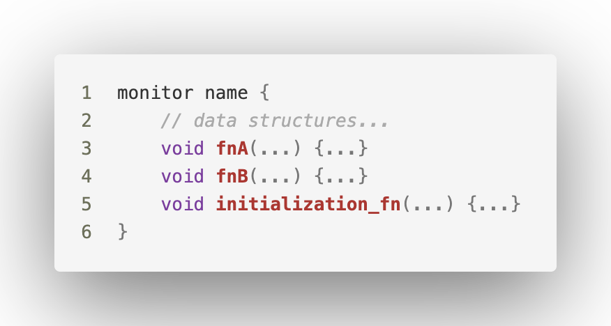</p> --- ### monitors <div class="multicolumn" style="display: grid; grid-template-columns: 40% 60%; gap: 20px; align-items: center;"> <div> </div> <div> looks familiar? </div> </div> --- ### monitors <div class="multicolumn" style="display: grid; grid-template-columns: 40% 60%; gap: 20px; align-items: center;"> <div> </div> <div> looks familiar? ## **a class!** - each **object** → own mutual exclusion </div> </div> --- ### monitors - <sc>Java</sc> → <scb>synchronized</scb> methods --- ### monitors - <sc>Java</sc> → <scb>synchronized</scb> methods - <sc>C</sc> → build yourself with **locks** + **condition variables** --- ## condition variables --- what if a **function** needs to **wait** for something? --- what if a **function** needs to **wait** for something? - _e.g._ data to arrive in a ring buffer --- what if a **function** needs to **wait** for something? - _e.g._ data to arrive in a ring buffer - _e.g._ user to press a key --- ### condition variables --- ### condition variables | call | what it does | |---|---| | <scb>wait_cv(cv, mux)</scb> | **block** on <scb>cv</scb>'s queue <br> **releases** monitor's mutex | --- ### condition variables | call | what it does | |---|---| | <scb>wait_cv(cv, mux)</scb> | **block** on <scb>cv</scb>'s queue <br> **releases** monitor's mutex | | <scb>signal_cv(cv)</scb> | **wake** thread blocked on <scb>cv</scb> | || --- ### condition variables | call | what it does | |---|---| | <scb>wait_cv(cv, mux)</scb> | **block** on <scb>cv</scb>'s queue <br> **releases** monitor's mutex | | <scb>signal_cv(cv)</scb> | **wake** thread blocked on <scb>cv</scb> | || [pthreads → [<scb>pthread_cond_wait</scb>](https://man7.org/linux/man-pages/man3/pthread_cond_wait.3p.html), [<scb>pthread_cond_signal</scb>](https://man7.org/linux/man-pages/man3/pthread_cond_signal.3p.html)] --- let's look at a `code` example... threads doing **blocking I/O** --- ```C struct ring_buffer rb; int nblked = 0; mutex_t IO_mux; cv_t IO_blklist; get_IO(void) { lock(IO_mux); if (ring_empty(&rb)) { nblked++; wait_cv(IO_blklist, IO_mux); } d = ring_dequeue(&rb); unlock(IO_mux); } // generate the I/O post_IO(void *d) { lock(IO_mux); if (nblked) { signal_cv(IO_blklist); nblked--; } ring_enqueue(&rb, d); unlock(IO_mux); } ``` --- ```C [7|8-9|10|18|19-21|23|12|13] struct ring_buffer rb; int nblked = 0; mutex_t IO_mux; cv_t IO_blklist; get_IO(void) { lock(IO_mux); if (ring_empty(&rb)) { nblked++; wait_cv(IO_blklist, IO_mux); } d = ring_dequeue(&rb); unlock(IO_mux); } // generate the I/O post_IO(void *d) { lock(IO_mux); if (nblked) { signal_cv(IO_blklist); nblked--; } ring_enqueue(&rb, d); unlock(IO_mux); } ``` --- ```C struct ring_buffer rb; int nblked = 0; mutex_t IO_mux; cv_t IO_blklist; get_IO(void) { lock(IO_mux); if (ring_empty(&rb)) { nblked++; wait_cv(IO_blklist, IO_mux); } d = ring_dequeue(&rb); unlock(IO_mux); } // generate the I/O post_IO(void *d) { lock(IO_mux); if (nblked) { signal_cv(IO_blklist); nblked--; } ring_enqueue(&rb, d); unlock(IO_mux); } ``` --- <scb>wait_cv()</scb> → **block while holding the lock**!? --- <scb>wait_cv()</scb> → **block while holding the lock**!? --- <scb>wait_cv()</scb> → **block while holding the lock**!? - nobody could ever get in to <scb>signal_cv()</scb>! - unitl <scb>wait_cv()</scb> **releases** lock --- ### condition variables | <scb>wait_cv()</scb> 1. <scb>T1</scb>: <scb>lock(IO_mux)</scb>, ring is **empty** <p>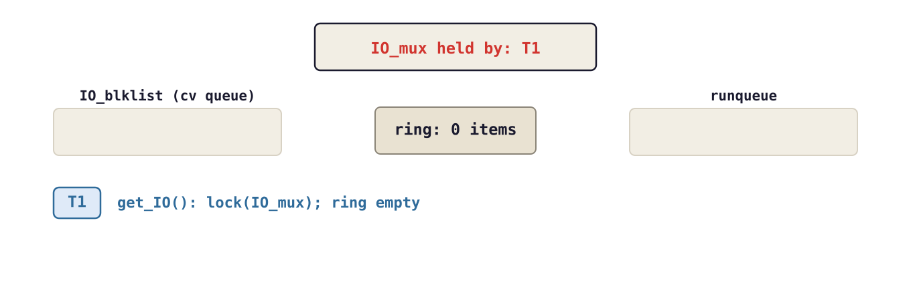</p> --- ### condition variables | <scb>wait_cv()</scb> 2. <scb>T1</scb>: <scb>wait_cv()</scb> → **release** lock, **block** <p>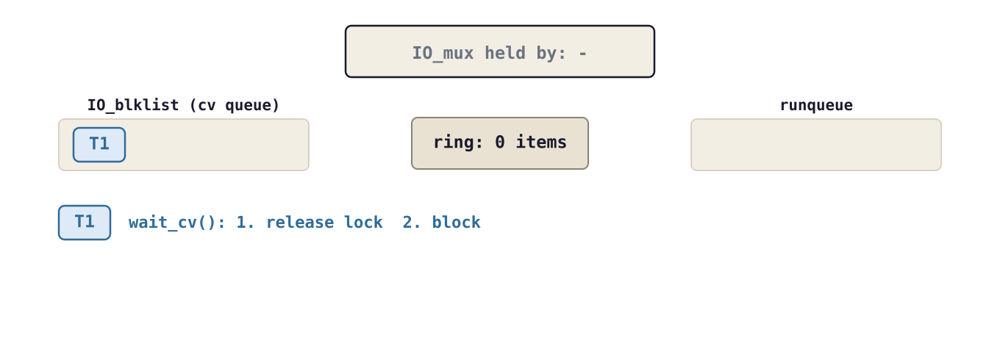</p> --- ### condition variables | <scb>wait_cv()</scb> 3. <scb>T2</scb>: <scb>post_IO()</scb> → <scb>signal_cv()</scb> → <scb>T1</scb> <scb>ready</scb> <p>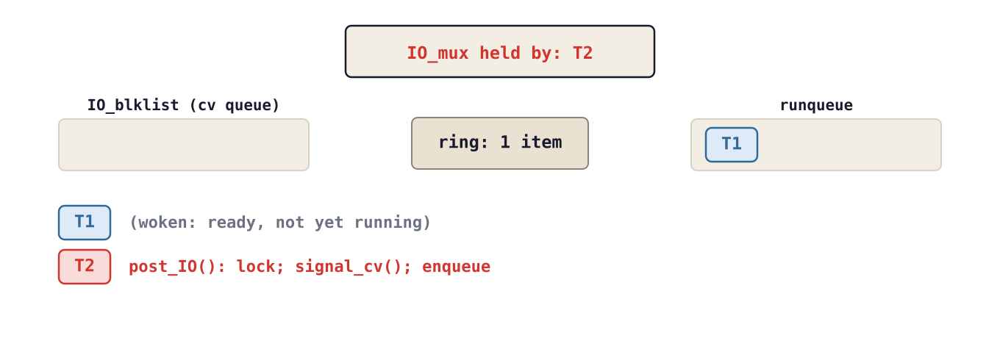</p> --- ### condition variables | <scb>wait_cv()</scb> 4. <scb>T2</scb>: <scb>unlock(IO_mux)</scb> <p>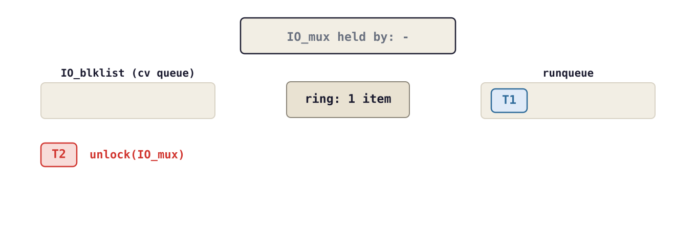</p> --- ### condition variables | <scb>wait_cv()</scb> 5. <scb>T1</scb> runs → <scb>wait_cv()</scb> **retakes** lock → dequeue --- ### condition variables | <scb>wait_cv()</scb> 1. **release** lock --- ### condition variables | <scb>wait_cv()</scb> 1. **release** lock 2. **block** --- ### condition variables | <scb>wait_cv()</scb> 1. **release** lock 2. **block** 3. when woken → **retake** lock --- ### condition variables | **implementation** pseudocode (ignoring concurrency) ```python wait_cv(cv, mux): unlock(mux) waitqueue_add(cv) runqueue_rem(curr) schedule() lock(mux) signal_cv(cv): // waitq remove and runq add thd = waitqueue_remove(cv) runqueue_add(thd) // scheduler runs woken thd later // note: no lock release!!! ``` --- ### condition variables | **implementation** pseudocode (ignoring concurrency) ```python [2|3|4|5|6|10|11|13] wait_cv(cv, mux): unlock(mux) waitqueue_add(cv) runqueue_rem(curr) schedule() lock(mux) signal_cv(cv): // waitq remove and runq add thd = waitqueue_remove(cv) runqueue_add(thd) // scheduler runs woken thd later // note: no lock release!!! ``` --- so a CV wait - **releases** lock - **blocks** - **retakes** lock --- so a CV wait - **releases** lock - **blocks** - **retakes** lock how does <scb>xv6</scb> do it? --- let's look at <scb>xv6</scb> | <scb>sleep()</scb> in <scb>proc.c</scb> --- ### <scb>xv6</scb> | <scb>sleep()</scb> → condition-variable wait ```C void sleep(void *chan, struct spinlock *lk) { ... if(lk != &ptable.lock){ acquire(&ptable.lock); release(lk); } // Go to sleep. p->chan = chan; p->state = SLEEPING; sched(); // Tidy up. p->chan = 0; // Reacquire original lock. if(lk != &ptable.lock){ release(&ptable.lock); acquire(lk); } } ``` --- ### <scb>xv6</scb> | <scb>sleep()</scb> → condition-variable wait ```C [6-7|10-11|13|16|20-21] void sleep(void *chan, struct spinlock *lk) { ... if(lk != &ptable.lock){ acquire(&ptable.lock); release(lk); } // Go to sleep. p->chan = chan; p->state = SLEEPING; sched(); // Tidy up. p->chan = 0; // Reacquire original lock. if(lk != &ptable.lock){ release(&ptable.lock); acquire(lk); } } ``` --- ### <scb>xv6</scb> | <scb>sleep()</scb> → condition-variable wait ```C void sleep(void *chan, struct spinlock *lk) { ... if(lk != &ptable.lock){ acquire(&ptable.lock); release(lk); } // Go to sleep. p->chan = chan; p->state = SLEEPING; sched(); // Tidy up. p->chan = 0; // Reacquire original lock. if(lk != &ptable.lock){ release(&ptable.lock); acquire(lk); } } ``` --- ### <scb>xv6</scb> | <scb>sleep()</scb>/<scb>wakeup()</scb> ||| | --- | --- | | <scb>sleep(chan, lk)</scb> | release <scb>lk</scb>, block on <scb>chan</scb>, retake <scb>lk</scb> | --- ### <scb>xv6</scb> | <scb>sleep()</scb>/<scb>wakeup()</scb> ||| | --- | --- | | <scb>sleep(chan, lk)</scb> | release <scb>lk</scb>, block on <scb>chan</scb>, retake <scb>lk</scb> | | <scb>wakeup(chan)</scb> | wake **every** process sleeping on <scb>chan</scb> | --- ### <scb>xv6</scb> | <scb>sleep()</scb>/<scb>wakeup()</scb> ||| | --- | --- | | <scb>sleep(chan, lk)</scb> | release <scb>lk</scb>, block on <scb>chan</scb>, retake <scb>lk</scb> | | <scb>wakeup(chan)</scb> | wake **every** process sleeping on <scb>chan</scb> | | <scb>ptable.lock</scb> | held across switch → no **lost** wakeups | || --- ### condition variables | **a problem** --- <scb>get_IO()</scb> uses <scb>if (ring_empty(...))</scb> --- <scb>get_IO()</scb> uses <scb>if (ring_empty(...))</scb> any **problems**? --- ### condition variables | **a problem** |||| | --- | --- | --- | | <scb>T1</scb> [**<font color="blue">blue</font>**] | waits for I/O | <scb>get_IO()</scb> | --- ### condition variables | **a problem** |||| | --- | --- | --- | | <scb>T1</scb> [**<font color="blue">blue</font>**] | waits for I/O | <scb>get_IO()</scb> | | <scb>T2</scb> [**<font color="red">red</font>**] | posts I/O | <scb>post_IO()</scb> | --- ### condition variables | **a problem** |||| | --- | --- | --- | | <scb>T1</scb> [**<font color="blue">blue</font>**] | waits for I/O | <scb>get_IO()</scb> | | <scb>T2</scb> [**<font color="red">red</font>**] | posts I/O | <scb>post_IO()</scb> | | <scb>T3</scb> [**<font color="green">green</font>**] | another consumer | <scb>get_IO()</scb> | || --- ### condition variables | **a problem** 1. <scb>T1</scb> blocked in <scb>wait_cv()</scb> <p>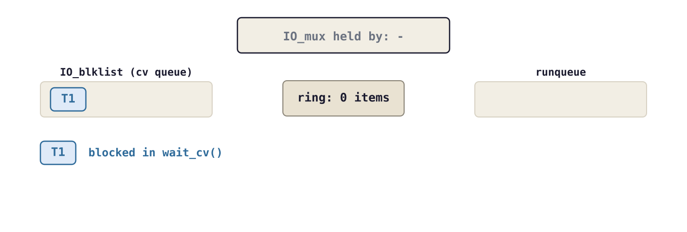</p> --- ### condition variables | **a problem** 2. <scb>T2</scb> posts I/O → <scb>T1</scb> woken (on runqueue) <p>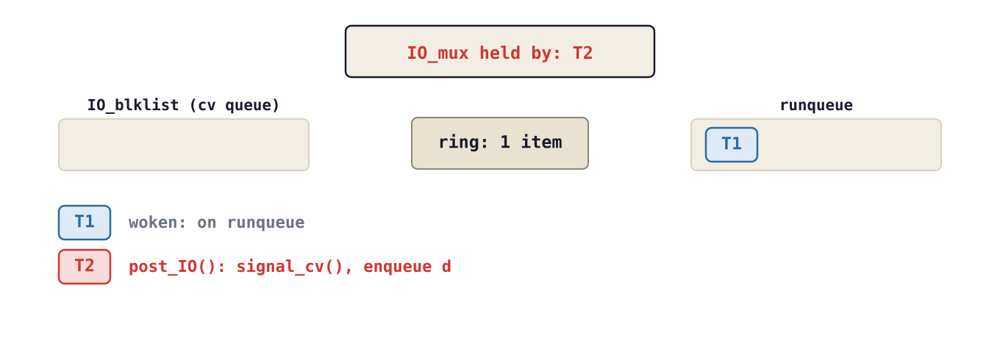</p> --- ### condition variables | **a problem** 3. <scb>T3</scb> **cuts in line** → takes item! <p>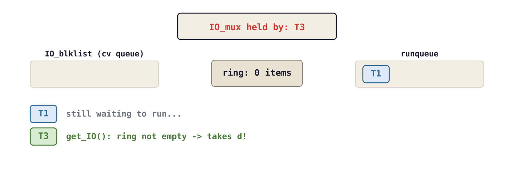</p> --- ### condition variables | **a problem** 4. <scb>T1</scb> finally runs → no re-check → <scb>d == NULL</scb>! <p>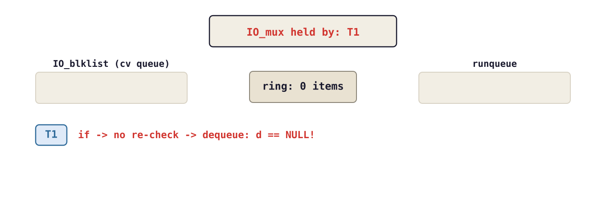</p> --- ### condition variables | **a problem** 5. fix → <scb>while</scb> → re-check → wait again <p>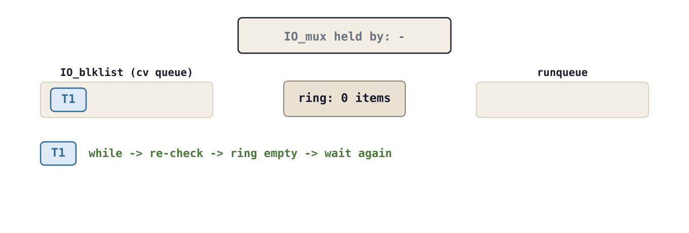</p> --- ### condition variables | **a problem** - <scb>wait_cv()</scb> **releases** lock → critical section **broken** --- ### condition variables | **a problem** - <scb>wait_cv()</scb> **releases** lock → critical section **broken** - when you wake up → **anything** may have changed! --- ### condition variables | **a problem** - <scb>wait_cv()</scb> **releases** lock → critical section **broken** - when you wake up → **anything** may have changed! - **always** re-check condition --- ### condition variables | **fix** | broken | correct | |---|---| | <scb>if (ring_empty(&rb))</scb> | <scb>while (ring_empty(&rb))</scb> | --- ### condition variables | **fix** | broken | correct | |---|---| | <scb>if (ring_empty(&rb))</scb> | <scb>while (ring_empty(&rb))</scb> | | <scb> wait_cv(...);</scb> | <scb> wait_cv(...);</scb> | || [same as <scb>acquiresleep()</scb>'s <scb>while</scb> in xv6!] --- let's look at a `code` example using <scb>pthreads</scb> (Linux) --- ```C #include <pthread.h> #include <stdio.h> #define N 100000 /* items produced */ int ring = 0; /* # of items available (stands in for a ring buffer) */ int consumed[3]; pthread_mutex_t io_mux = PTHREAD_MUTEX_INITIALIZER; pthread_cond_t io_cv = PTHREAD_COND_INITIALIZER; int done = 0; void *get_io(void *arg) { /* consumer */ int id = *(int *)arg; while (1) { pthread_mutex_lock(&io_mux); while (ring == 0 && !done) /* WHILE, not if: re-check after waking */ pthread_cond_wait(&io_cv, &io_mux); if (ring == 0 && done) { pthread_mutex_unlock(&io_mux); return NULL; } ring--; /* take one item */ consumed[id]++; pthread_mutex_unlock(&io_mux); } } void post_io(void) { /* producer */ pthread_mutex_lock(&io_mux); ring++; /* add one item */ pthread_cond_signal(&io_cv); /* wake (at least) one waiter */ pthread_mutex_unlock(&io_mux); } int main(void) { pthread_t t[3]; int ids[3] = {0, 1, 2}; for (int i = 0; i < 3; i++) pthread_create(&t[i], NULL, get_io, &ids[i]); for (int i = 0; i < N; i++) post_io(); pthread_mutex_lock(&io_mux); done = 1; pthread_cond_broadcast(&io_cv); /* wake everyone to exit */ pthread_mutex_unlock(&io_mux); for (int i = 0; i < 3; i++) pthread_join(t[i], NULL); printf("consumed: %d + %d + %d = %d\n", consumed[0], consumed[1], consumed[2], consumed[0] + consumed[1] + consumed[2]); return 0; } ``` --- ```C [9|16|17|22|30|31|44] #include <pthread.h> #include <stdio.h> #define N 100000 /* items produced */ int ring = 0; /* # of items available (stands in for a ring buffer) */ int consumed[3]; pthread_mutex_t io_mux = PTHREAD_MUTEX_INITIALIZER; pthread_cond_t io_cv = PTHREAD_COND_INITIALIZER; int done = 0; void *get_io(void *arg) { /* consumer */ int id = *(int *)arg; while (1) { pthread_mutex_lock(&io_mux); while (ring == 0 && !done) /* WHILE, not if: re-check after waking */ pthread_cond_wait(&io_cv, &io_mux); if (ring == 0 && done) { pthread_mutex_unlock(&io_mux); return NULL; } ring--; /* take one item */ consumed[id]++; pthread_mutex_unlock(&io_mux); } } void post_io(void) { /* producer */ pthread_mutex_lock(&io_mux); ring++; /* add one item */ pthread_cond_signal(&io_cv); /* wake (at least) one waiter */ pthread_mutex_unlock(&io_mux); } int main(void) { pthread_t t[3]; int ids[3] = {0, 1, 2}; for (int i = 0; i < 3; i++) pthread_create(&t[i], NULL, get_io, &ids[i]); for (int i = 0; i < N; i++) post_io(); pthread_mutex_lock(&io_mux); done = 1; pthread_cond_broadcast(&io_cv); /* wake everyone to exit */ pthread_mutex_unlock(&io_mux); for (int i = 0; i < 3; i++) pthread_join(t[i], NULL); printf("consumed: %d + %d + %d = %d\n", consumed[0], consumed[1], consumed[2], consumed[0] + consumed[1] + consumed[2]); return 0; } ``` --- ```C #include <pthread.h> #include <stdio.h> #define N 100000 /* items produced */ int ring = 0; /* # of items available (stands in for a ring buffer) */ int consumed[3]; pthread_mutex_t io_mux = PTHREAD_MUTEX_INITIALIZER; pthread_cond_t io_cv = PTHREAD_COND_INITIALIZER; int done = 0; void *get_io(void *arg) { /* consumer */ int id = *(int *)arg; while (1) { pthread_mutex_lock(&io_mux); while (ring == 0 && !done) /* WHILE, not if: re-check after waking */ pthread_cond_wait(&io_cv, &io_mux); if (ring == 0 && done) { pthread_mutex_unlock(&io_mux); return NULL; } ring--; /* take one item */ consumed[id]++; pthread_mutex_unlock(&io_mux); } } void post_io(void) { /* producer */ pthread_mutex_lock(&io_mux); ring++; /* add one item */ pthread_cond_signal(&io_cv); /* wake (at least) one waiter */ pthread_mutex_unlock(&io_mux); } int main(void) { pthread_t t[3]; int ids[3] = {0, 1, 2}; for (int i = 0; i < 3; i++) pthread_create(&t[i], NULL, get_io, &ids[i]); for (int i = 0; i < N; i++) post_io(); pthread_mutex_lock(&io_mux); done = 1; pthread_cond_broadcast(&io_cv); /* wake everyone to exit */ pthread_mutex_unlock(&io_mux); for (int i = 0; i < 3; i++) pthread_join(t[i], NULL); printf("consumed: %d + %d + %d = %d\n", consumed[0], consumed[1], consumed[2], consumed[0] + consumed[1] + consumed[2]); return 0; } ``` --- ### example - one producer - **three** consumers - <scb>100000</scb> items how many get consumed? --- ### condition variables | **output** ``` $ gcc -pthread -o cv_io cv_io.c $ ./cv_io consumed: 32911 + 30328 + 36761 = 100000 $ ./cv_io consumed: 34047 + 30783 + 35170 = 100000 ``` every item consumed **exactly once** → split varies run to run Note: - actual runs (8-core Linux box). --- exercise → implement condition variables **using mutexes**! --- ## monitors | **in xv6** --- recall <scb>pipe.c</scb> → a **monitor**! --- ### <scb>xv6</scb> | <scb>struct pipe</scb> ```C #define PIPESIZE 512 struct pipe { struct spinlock lock; char data[PIPESIZE]; uint nread; // number of bytes read uint nwrite; // number of bytes written int readopen; // read fd is still open int writeopen; // write fd is still open }; ``` --- ### <scb>xv6</scb> | <scb>struct pipe</scb> ```C [1|4|5|6-7] #define PIPESIZE 512 struct pipe { struct spinlock lock; char data[PIPESIZE]; uint nread; // number of bytes read uint nwrite; // number of bytes written int readopen; // read fd is still open int writeopen; // write fd is still open }; ``` --- ### <scb>xv6</scb> | <scb>pipewrite()</scb> ```C int pipewrite(struct pipe *p, char *addr, int n) { int i; acquire(&p->lock); for(i = 0; i < n; i++){ while(p->nwrite == p->nread + PIPESIZE){ //DOC: pipewrite-full ... wakeup(&p->nread); sleep(&p->nwrite, &p->lock); //DOC: pipewrite-sleep } p->data[p->nwrite++ % PIPESIZE] = addr[i]; } wakeup(&p->nread); //DOC: pipewrite-wakeup1 release(&p->lock); return n; } ``` --- ### <scb>xv6</scb> | <scb>pipewrite()</scb> ```C [6|8|10|11|13|15|16] int pipewrite(struct pipe *p, char *addr, int n) { int i; acquire(&p->lock); for(i = 0; i < n; i++){ while(p->nwrite == p->nread + PIPESIZE){ //DOC: pipewrite-full ... wakeup(&p->nread); sleep(&p->nwrite, &p->lock); //DOC: pipewrite-sleep } p->data[p->nwrite++ % PIPESIZE] = addr[i]; } wakeup(&p->nread); //DOC: pipewrite-wakeup1 release(&p->lock); return n; } ``` --- ### <scb>xv6</scb> | **pipe → monitor** ||| | --- | --- | | <scb>p->lock</scb> | monitor's **mutex** | --- ### <scb>xv6</scb> | **pipe → monitor** ||| | --- | --- | | <scb>p->lock</scb> | monitor's **mutex** | | <scb>sleep(&p->nwrite, ...)</scb> | <scb>wait_cv</scb> → pipe **full** | --- ### <scb>xv6</scb> | **pipe → monitor** ||| | --- | --- | | <scb>p->lock</scb> | monitor's **mutex** | | <scb>sleep(&p->nwrite, ...)</scb> | <scb>wait_cv</scb> → pipe **full** | | <scb>wakeup(&p->nread)</scb> | <scb>signal_cv</scb> → data for readers | --- ### <scb>xv6</scb> | **pipe → monitor** ||| | --- | --- | | <scb>p->lock</scb> | monitor's **mutex** | | <scb>sleep(&p->nwrite, ...)</scb> | <scb>wait_cv</scb> → pipe **full** | | <scb>wakeup(&p->nread)</scb> | <scb>signal_cv</scb> → data for readers | | <scb>while(...)</scb> | **re-check** after waking! | || --- ## monitors | **in Java** --- ### Java | <scb>synchronized</scb> ||| | --- | --- | | lock per **object** | <scb>synchronized</scb> → take it inside method | --- ### Java | <scb>synchronized</scb> ||| | --- | --- | | lock per **object** | <scb>synchronized</scb> → take it inside method | | condition variable per **object** | <scb>wait()</scb> & <scb>notify()</scb> | || --- ```java class IO { LinkedList<Data> io_queue; int nblked; public synchronized Data get_io() { while (io_queue.size() == 0) { nblked++; this.wait(); } return io_queue.remove(); } public synchronized void post_io(Data io) { if (nblked > 0) { nblked--; this.notify(); } io_queue.add(io); } } ``` --- ```java [5|6|8|16] class IO { LinkedList<Data> io_queue; int nblked; public synchronized Data get_io() { while (io_queue.size() == 0) { nblked++; this.wait(); } return io_queue.remove(); } public synchronized void post_io(Data io) { if (nblked > 0) { nblked--; this.notify(); } io_queue.add(io); } } ``` --- **every** language has locks + condition variables --- **every** language has locks + condition variables **required** abstractions for multi-threaded code! --- ## readers/writers --- ### readers/writers | **read-mostly** - data structure **read** often, **written** rarely --- ### readers/writers | **read-mostly** - data structure **read** often, **written** rarely - _e.g._ caches → [memcached](https://memcached.org/) --- ### readers/writers | **read-mostly** - data structure **read** often, **written** rarely - _e.g._ caches → [memcached](https://memcached.org/) - one Facebook page → **hundreds** of cache reads --- ### readers/writers | **who can share?** | | with others? | |---|---| | **readers** [**<font color="blue">blue</font>**] | **concurrent** reads allowed! | --- ### readers/writers | **who can share?** | | with others? | |---|---| | **readers** [**<font color="blue">blue</font>**] | **concurrent** reads allowed! | | **writers** [**<font color="red">red</font>**] | wait for **all** reads (and writes) to finish | || --- ### readers/writers | **built from mutexes** ```C mutex mutex, write_mut; int read_num = 0; reader: lock(mutex); read_num++; if (read_num == 1) lock(write_mut); unlock(mutex); read_data_struct(); lock(mutex); read_num--; if (read_num == 0) unlock(write_mut); unlock(mutex); writer: lock(write_mut); read_data_struct(); write_data_struct(); unlock(write_mut); ``` --- ### readers/writers | **built from mutexes** ```C [6|7-8|10|13-14|18|20|21] mutex mutex, write_mut; int read_num = 0; reader: lock(mutex); read_num++; if (read_num == 1) lock(write_mut); unlock(mutex); read_data_struct(); lock(mutex); read_num--; if (read_num == 0) unlock(write_mut); unlock(mutex); writer: lock(write_mut); read_data_struct(); write_data_struct(); unlock(write_mut); ``` --- ### readers/writers | **built from mutexes** ```C mutex mutex, write_mut; int read_num = 0; reader: lock(mutex); read_num++; if (read_num == 1) lock(write_mut); unlock(mutex); read_data_struct(); lock(mutex); read_num--; if (read_num == 0) unlock(write_mut); unlock(mutex); writer: lock(write_mut); read_data_struct(); write_data_struct(); unlock(write_mut); ``` --- ### readers/writers | **built from mutexes** - **first** reader in → takes <scb>write_mut</scb> (blocks writers) --- ### readers/writers | **built from mutexes** - **first** reader in → takes <scb>write_mut</scb> (blocks writers) - other readers → pour in **concurrently** --- ### readers/writers | **built from mutexes** - **first** reader in → takes <scb>write_mut</scb> (blocks writers) - other readers → pour in **concurrently** - **last** reader out → releases <scb>write_mut</scb> --- ### readers/writers | **reader bias** readers inside → writer waits <p>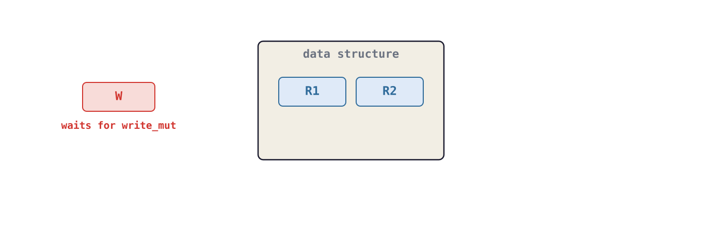</p> --- ### readers/writers | **reader bias** more readers keep arriving... <p>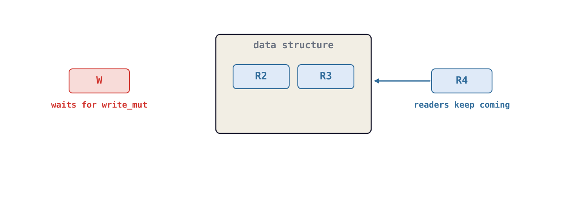</p> --- ### readers/writers | **reader bias** last reader leaves → writer finally enters --- ### readers/writers does this work? --- ### readers/writers does this work? --- ## **yes...** --- ## **yes...** - but **reader-biased** → endless readers **starve** writers! --- downsides of reader/writer locks vs. mutexes? --- ### readers/writers | **cons** ||| | --- | --- | | more **complex** | double locks + lock operations | --- ### readers/writers | **cons** ||| | --- | --- | | more **complex** | double locks + lock operations | | more **expensive** | than plain mutex | --- ### readers/writers | **cons** ||| | --- | --- | | more **complex** | double locks + lock operations | | more **expensive** | than plain mutex | | **bias** | must balance readers vs. writers <br> for bounded waiting | || --- ## the view from **up high** --- ### the view from up high why not just do this? ```C int main(void) { wait(&big_lock); compute(); signal(&big_lock); } ``` --- ### the view from up high - **coarsest** lock possible! --- ### the view from up high - **coarsest** lock possible! - Linux → [**big kernel lock**](https://en.wikipedia.org/wiki/Giant_lock) (BKL) --- ### the view from up high - **coarsest** lock possible! - Linux → [**big kernel lock**](https://en.wikipedia.org/wiki/Giant_lock) (BKL) - one lock around **whole** kernel - one core in kernel at a time Note: - the BKL arrived with Linux 2.0 (first SMP support) and was removed for good in 2.6.39 (2011). --- ### the view from up high how much synchronization? <p>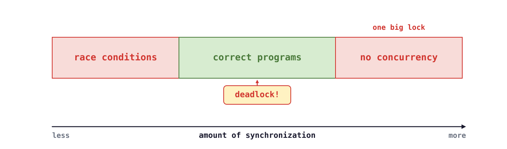</p> --- ### the view from up high - too **little** → race conditions --- ### the view from up high - too **little** → race conditions - too **much** → no concurrency --- ### the view from up high - too **little** → race conditions - too **much** → no concurrency - in between → **correct** programs --- ### the view from up high - too **little** → race conditions - too **much** → no concurrency - in between → **correct** programs <br> <br> <center><div class="center" data-id="box" style="height: 75px; width: 400px; background: orange;"> and <b>deadlock!</b> </div></center> --- locks → a **necessary evil** --- locks → a **necessary evil** tools: - fine-grained locks - reader/writer locks --- locks → a **necessary evil** tools: - fine-grained locks - reader/writer locks paid for in **complexity** --- ### synchronization abstractions | **summary** --- |type|details|effect| | --- | --- | --- | | **spinlocks** | atomics + disabled interrupts | spin | --- |type|details|effect| | --- | --- | --- | | **spinlocks** | atomics + disabled interrupts | spin | | **mutexes** | spinlock + wait queue | block | --- |type|details|effect| | --- | --- | --- | | **spinlocks** | atomics + disabled interrupts | spin | | **mutexes** | spinlock + wait queue | block | | **condition variables** | block until a condition | <scb>while</scb> + re-check | --- |type|details|effect| | --- | --- | --- | | **spinlocks** | atomics + disabled interrupts | spin | | **mutexes** | spinlock + wait queue | block | | **condition variables** | block until a condition | <scb>while</scb> + re-check | | **monitors** | data + fns + one mutex (+ CVs) || --- |type|details|effect| | --- | --- | --- | | **spinlocks** | atomics + disabled interrupts | spin | | **mutexes** | spinlock + wait queue | block | | **condition variables** | block until a condition | <scb>while</scb> + re-check | | **monitors** | data + fns + one mutex (+ CVs) || | **reader/writer locks** | concurrent readers, exclusive writers || || --- **next topic** → synchronization examples and **deadlock**